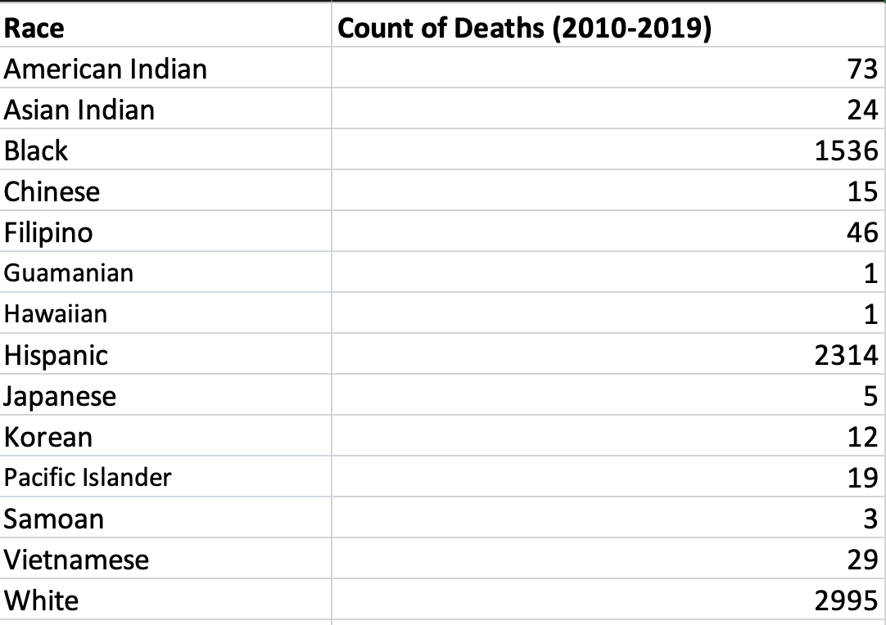
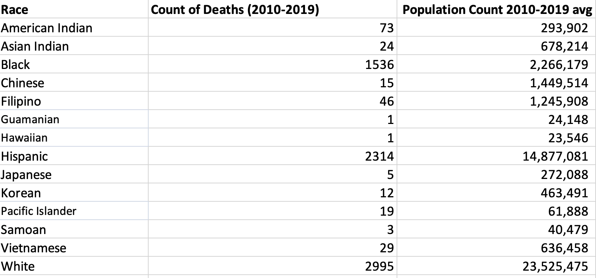
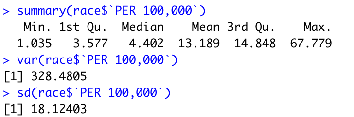
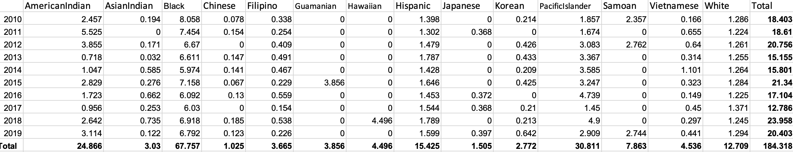
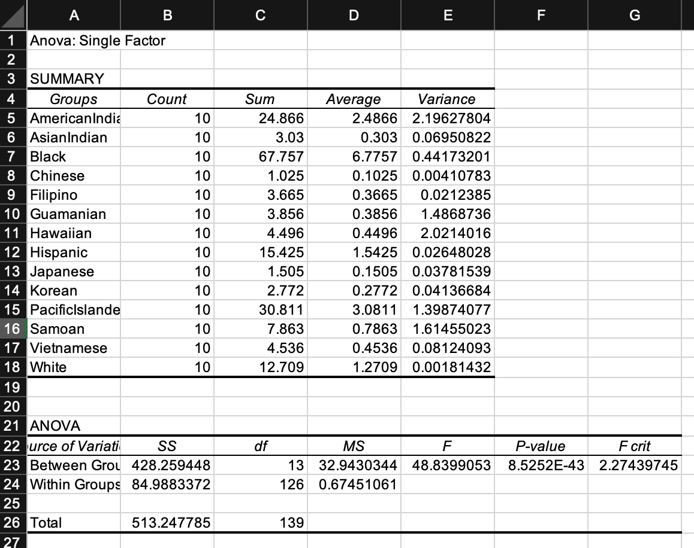
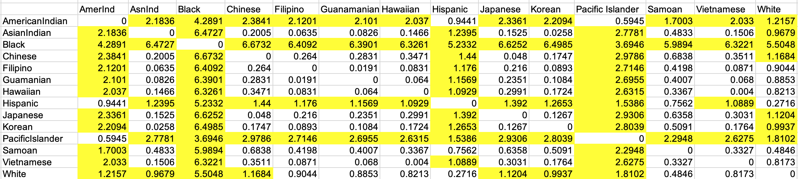

Time Frame
3 Months
October 2021-December 2021
Tools Used
R
Excel
Notion
Role
Cleaned a large dataset containing over 80,000 entries
Performed statistical analysis tests
Created data visualizations on Tableau

A data-driven analysis of deaths that occurred in police custody within the state of California between 2010-2019.
3 Months
October 2021-December 2021
R
Excel
Notion
Cleaned a large dataset containing over 80,000 entries
Performed statistical analysis tests
Created data visualizations on Tableau
Rocky race relations and maltreatment of racial minorities are ingrained in the historical foundation of the United States. Although legislations have been implemented in an attempt to counteract racial and ethnic discrimination (e.g., United States v. Montgomery County Board of Education)—and despite the shifts in cultural and social attitudes towards minority groups in America overtime—discrimination towards racial and ethnic minorities continues to permeate throughout multiple areas of American society today. The legal system is no exception.
Police officers are expected to aid civilians and uphold peace in the community (quite literally, police officers are legally categorized as "peace officers" in California). However, within the past years, prompted by police brutality and unjust killings of black Americans, the relationship between civilians and police officers in the United States has resulted in mistrust and fear.
Our research project seeks to explore the current state of the American justice system, specifically the deaths that occurred while an individual is in police custody within the state of California from 2010-2019. Here are our research questions:
In light of 2020’s summer protests against police brutality across the nation, now more than ever, it is extremely important to study the effects of law enforcement and examine which groups of people are adversely affecting the most. Our project can possibly help us pinpoint if there are issues of inequality––and where these issues arise––within the American justice system.
Our research can help readers become more informed about the current state of the American justice system. In addition, through being informed, we hope that readers can empathize with the racial groups who are receiving unequal treatment in the justice system. Ultimately, we hope that this project can urge and motivate readers to champion for social and legislative changes that addresses issues of inequality.
We used a variety of tools to work with our data in order to create tables and solve statistical calculations: Excel, R, and Tableau.
We used Excel for cleaning, filter, and sorting our dataset. We also used Excel to construct our outcome and contingency tables and conduct our ANOVA and Least Significant Difference Test.
We used Excel to clean our dataset because we've used Excel to clean our data in the past and we felt comfortable using it for that purpose. The same applies to why we used Excel to construct our outcome and contingency tables. We chose to conduct our ANOVA test on Excel instead of R because we could not compare more than two groups at once on R. This setback would be time-consuming and it was extremely easy using Excel for the ANOVA test. Because we performed our ANOVA test on Excel, we also performed our Least Significant Difference Test on Excel as well because that test relies on data from the ANOVA test and it was more convenient to have both tests in one place.
We used R to solve statistical calculations like the 5 number summary and z-test. This software had intuitive methods that made it simple to work with the data. Since we learned about which commands to use, it was easier running that command in R to get the statistical results instead of searching for the formulas on Excel.
We initially created some visualizations, such as a box plot, in R but came to the agreement that Tableau creates more appealing and interactive graphs for the reader. Therefore, all of our data visualizations were created on Tableau.
Our dataset is titled, "Death in Custody & Arrest-Related Deaths" and we retrieved it from OpenJustice. OpenJustice is a data-driven project that is part of California's Department of Justice. OpenJustice seeks to strengthen the trust between law enforcement and civilians through transparency, government accountability, and improving public policy in the criminal justice system.
We cleaned our dataset using Excel. The original dataset ranges from the years 2005-2020, and consists of various variables such as, an individual's race, gender, age, year of death, manner of death, county where the death occurred, etc. For our project, we focused on the years 2010-2019 because (1) the original dataset is too large (2005-2020 contains 11618 rows, while 2010-2019 contains 7311 rows) and (2) since we adjusted the deaths of a given race to the rate of per 100,000, we had to use California census records and data from the most recent census (i.e., 2020) has not been released yet.
Additionally, we omitted the races Cambodian, Laotian, Other, and Other Asian because the census records we used do not contain data for those racial categories; hence, we were unable to convert the deaths of those races to the rate of per 100,000.
For our 5 number summary, we first aggregated the cumulative count of deaths for each given race from 2010-2019.

Afterwards, we used data from the United States Census Bureau, specifically the "American Community Survey Demographic and Housing Estimates" to get the racial demographic population count in California from 2010-2019. We calculated the average racial demographic population count from 2010-2019 through adding up demographic population count from each individual year and dividing the final sum by 10.

Afterwards, we converted the count of deaths from the original dataset into the rate of per 100,000 in order to take into account how the racial demographic distribution in California is unequally distributed.

Here are our results:
The mean is 13.189. This means that on average, about 13 per 100,000 individuals in California have died in custody from 2010-2019.
The median is 4.402. Since the mean is higher than the median, our graph is skewed to the right. This skewness is possibly due to how many Black (roughly 67 per 100,000) and Pacific Islander (roughly 30) individuals died in custody.
Our minimum is 1.035 (roughly 1 per 100,000); the race that has the least number of deaths in custody is Chinese.
Our maximum is 67.779 (roughly 67 per 100,000); the race that has the highest number of deaths in custody are Black individuals.
We created a box plot on Tableau to visualize our findings. Based on this visualization, Black is the only race that is not on the box plot. White is the closest to the mean. Races that are not located around the median are more spread out than the races that are located around there.

The variance is 328.4805 and the standard deviation is 18.12403. The variance reflects how spread out the variables are relative to the mean. Factors that could affect the variance are outliers. We can calculate for lower and higher outliers and found that we have two higher outliers: Pacific Islanders (30.701) and Black (67.779).
For this one-way ANOVA test, we are testing for the differences among the mean rates of dying in custody for different races. We chose to conduct a one-way ANOVA instead of a two-way ANOVA test because we are only analyzing one independent variable: Race.
We first constructed a contingency table for this test. The contingency table has each individual race in the columns and the years (i.e., 2010-2019) are in the rows. In order to construct this contingency table, we filtered the original dataset by race and year to get the number of how many individuals of a given died in each specific year. Afterwards, we converted that number to the rate of per 100,000 using California census records.

This test aims at answering our first research question: does one’s race affect one’s likelihood of dying in custody? Here are our hypotheses:
H₀ = one’s race does not affect one’s likelihood of dying in custody
Hₐ = one’s race does affect one’s likelihood of dying in custody
ɑ = 0.01
After running our ANOVA test, our P-value ended up being 8.5252E-43. Our P-value is smaller than our alpha value; therefore, we can reject our null hypothesis. This indicates that there is a statistically significant chance that one’s race does affect one’s likelihood of dying in custody.

Although the ANOVA test tells us if there’s a difference between the means of the groups we’re comparing, it does not tell us which specific groups are different from each other. In order to find this out, we need to perform a post hoc test. The specific post hoc test we’re using is the Least Significant Difference (LSD) Test.
First, we need to find the t-critical value. In order to do this, we used the T.INV.2T function on Excel. We plugged in our alpha value (0.01) and the degrees of freedom from the within groups from the ANOVA test (126). The t-critical value is 2.615.
The mean squares within groups from the ANOVA test is 0.6745.
The sample size of all the groups is 10. However, since we are performing a two-tailed analysis, we used 1/5 instead of 1/10.
Afterwards, we plugged all of the numbers into the formula, and ended up with an LSD of 0.96:
If the difference is higher than the LSD, this signifies that there’s a significant difference between the two groups. We highlighted that number. For example, there is a significant difference between the rate of dying in custody between Black and American Indian individuals. Overall, there is a significant difference between Black and every other race, followed by Pacific Islander, American Indian, and Hispanic, respectively.


Based on our 5 Number Summary, we found that on average, approximately 13 out of every 100,000 individuals in the State of California have died in custody from 2010-2019. There are two outliers: Pacific Islander and Black. From 2010-2019, approximately 30 out of every 100,000 Pacific Islander individuals in the State of California have died in custody. Additionally, approximately 67 out of every 100,000 Black individuals in the State of California have died in custody from 2010-2019. Black individuals have a higher chance of dying in custody than any other race. Black individuals are also two times more likely to die in custody than the next most likely race to die in custody (i.e., Pacific Islander).
The ANOVA test answers our research question: does one's race affect one's likelihood of dying in custody? Based on our results, there is a statistically significant chance that one's race does affect one's likelihood of dying in custody.
The Least Significant Difference Test shows us if there is a statistically significant difference between two given groups. Based on the results of our test, there is a statistically significant difference that Black individuals are more likely to die in custody than any other race, followed by Pacific Islander, American Indian, and Hispanic individuals, respectively.
In theory, all Americans are considered "equal" under the legislative system. This striving for equality is expressed through the implementation of Due Process and the Equal Protection Clause in the Constitution. However, our findings indicate otherwise. This issue is pressing because it highlights how flawed the U.S. criminal justice system is. Additionally, the issue of racial discrimination does not end once the prisoner leaves the prison. Being a "criminal" only exacerbates being discriminated against.
Policing has always been a topic of concern and the media has attempted to dilute the issue, but our research has further exposed the issue. While policing affects many groups in California, the group most affected is the Black community and their struggles continue against police violence. Black individuals are two times more likely to die in custody than any other race.
Although the data exposes evidence of police violence against the Black community and other minority groups, our research did not uncover everything. Further research can examine the types of crimes individuals are arrested for before they die while in custody. As well as exploring the way individuals die while in custody. Our data set has a lot to offer in terms of qualitative data but made it difficult to run statistical tests due to the lack of quantitative data.
Nevertheless, this research supports the racial bias that lies within the legal system and should be heavily considered when looking toward police reform and structural reform as a whole.
To conclude, we would like to make an appeal to action. The cycle of racial inequality and discrimination will continue to persist unless we advocate for change. Yes, the criminal U.S. justice system is at fault, but we, you the reader, and every U.S. citizen has played a role too. We have to advocate for change. We have to stay informed. We have to have empathy for the struggles that others are facing. Does it matter if these struggles do not affect us personally? In our opinion, no. We owe it to each other, out of respect for the dignity of other human beings, to care about one another.